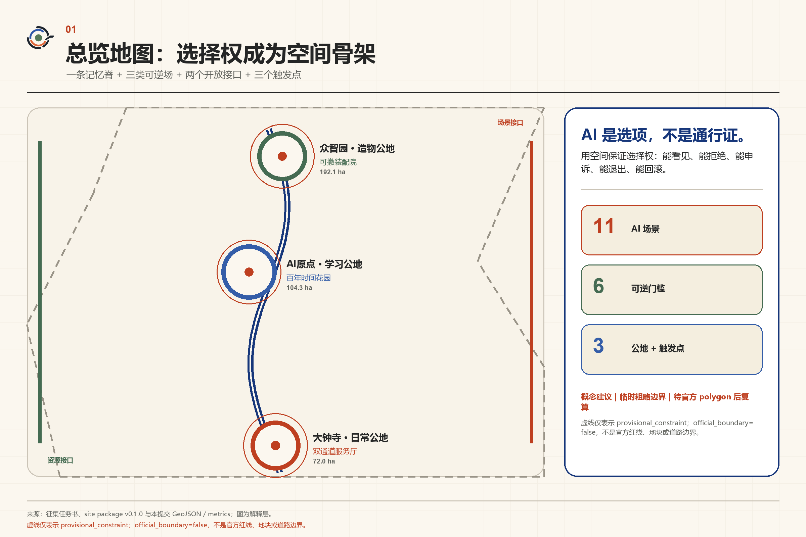
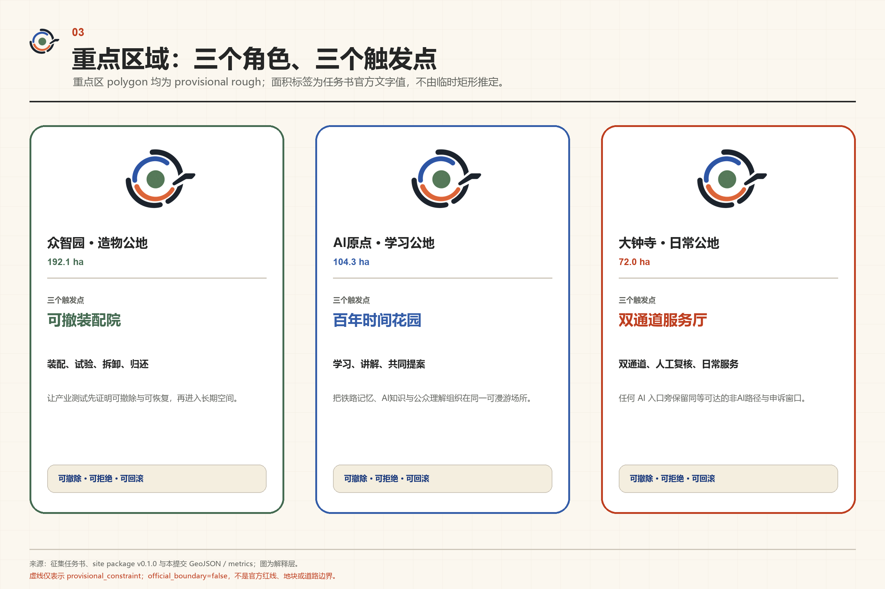
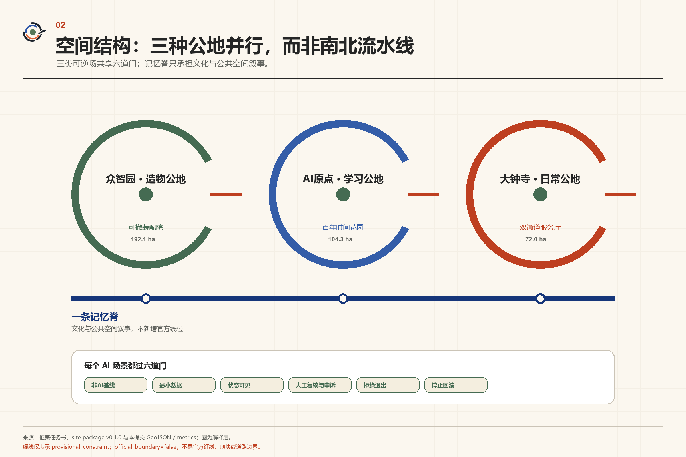
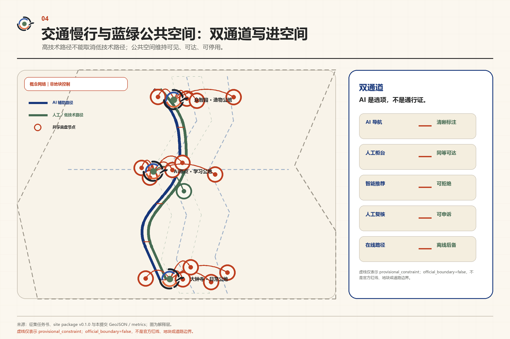
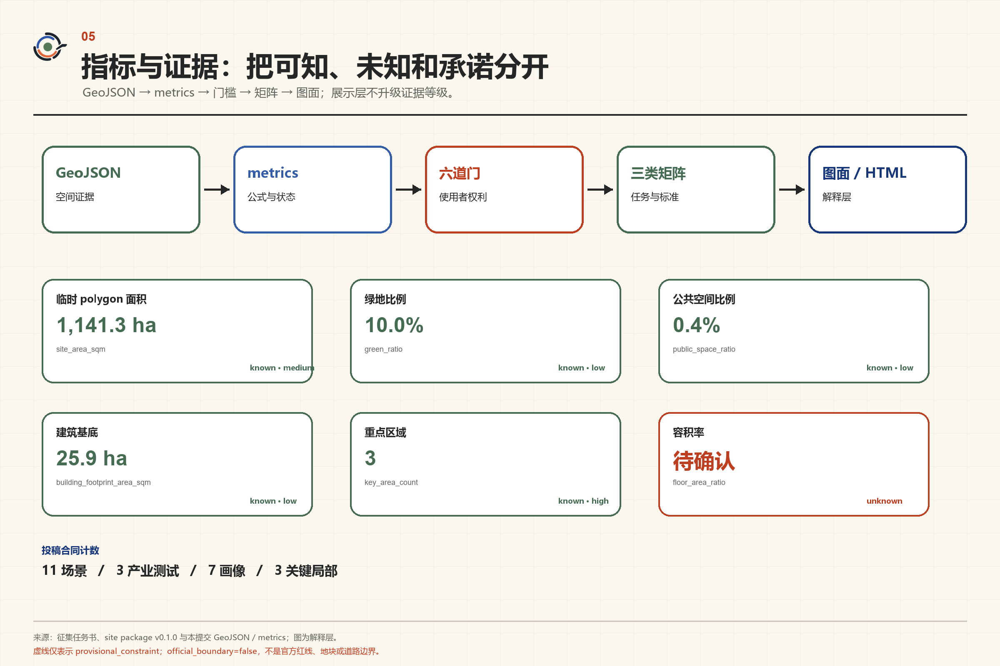

JING-ZHANG REVERSIBLE COMMONS
温暖公民地图 / WARM CIVIC ATLAS
百年京张 · 可逆公地
AI 是选项，不是通行证。
用空间保证选择权：能看见、能拒绝、能申诉、能退出、能回滚。
概念建议｜临时粗略边界｜待官方 polygon 后复算
01 / OVERVIEW
总览地图
一条记忆脊 + 三类可逆场 + 两个开放接口 + 三个触发点

02 / SCALES
三层范围
工作层级来自任务书。面积文字值不等于官方 polygon；临时 geometry 只为生成、展示与复算工作流服务。
总体设计范围
城市更新与空间结构 · 官方文字面积重点区域合计
三个重点区详细设计 · 官方文字面积03 / KEY AREAS
重点区域与更新项目
三个公地是并行角色，不构成北—中—南流程；每个关键局部都从小尺度空间触发产业、公共生活与运营变化。
众智园 · 造物公地
可撤装配院
AI原点 · 学习公地
百年时间花园
大钟寺 · 日常公地
双通道服务厅

用地分区与建筑
用地、建筑与公共空间是概念建议。官方控规、权属、道路红线、建筑高度与容积率尚未提供，须在专业深化时核对。

交通慢行与蓝绿公共空间
每个高技术路径旁都保留同等可达的人工或低技术路径；蓝绿网络承载日常停留，而不是技术展示背景。

概念建议｜临时粗略边界｜待官方 polygon 后复算
虚线仅表示 provisional_constraint；official_boundary=false，不是官方红线、地块或道路边界。
04 / AI
AI 场景
11 个新场景按使用者选择权组织，其中前三项为产业测试场景。每项进入空间前都必须通过六道门。
- 01非AI基线
- 02最小数据
- 03状态可见
- 04人工复核与申诉
- 05拒绝退出
- 06停止回滚
模型材料图书馆
产业测试
机器人礼让街
产业测试
低碳算力交换站
产业测试
开源课桌
公共学习
AI使用说明廊
状态可见
非AI服务柜台
非AI基线
无障碍出行预演
出行选择
百年时间镜
文化体验
公共提案工坊
共同治理
机会导航与人工复核
人工复核
夜间安静伙伴
低扰动
七类使用者画像
附近老年居民与低数字熟练度使用者
行动 / 视觉 / 听觉 / 认知障碍访客
开发者与研究者
初创 / 中小企业团队
一线运营与人工服务人员
儿童与陪同者
国际人才与短期访客
阶段门与运营四季
概念包
无设备公共原型
低风险限域试用
是否扩大
- 01公开问题季
- 02小型原型季
- 03共同观察季
- 04日落复盘季
留有余地周 / Room to Choose Week
日期、预算、主办者和责任主体均为 unknown / not authorized，不构成确定实施计划。
公共证据牌与六类最小组件
有期限的公共证据牌
用途、状态、受益者、限制、停止记录、人工路径、复核日期与撤牌条件必须同时可见。
- 01开口公地标识
- 02双路径入口
- 03人工复核桌
- 04告知—申诉板
- 05可撤观察棚
- 06时间证据牌
开发者生命周期
- 01问题卡
- 02入门与角色
- 03四方复核
- 04知识包
- 05归档 / 移交 / 退出
无人维护、证据过期或风险上升时归档并移交；个人可退出，不以持续追踪换取参与。
05 / METRICS
核心指标
带数值的卡片与 metrics.json 同值。unknown 项保持非数字，不把缺失控规变成规划承诺。
临时 polygon 面积
1,141.3 hasite_area_sqm · known · medium绿地比例
10.0%green_ratio · known · low公共空间比例
0.4%public_space_ratio · known · low建筑基底
25.9 habuilding_footprint_area_sqm · known · low重点区域
3key_area_count · known · highAI 场景
11scenario_count · known · high产业测试场景
3industry_test_scenario_count · known · high使用者画像
7user_persona_count · known · high关键局部
3catalytic_intervention_count · known · high可逆门槛
6reversible_gate_count · known · high六门文档覆盖
100.0%reversible_gate_coverage_ratio · known · high容积率
待确认官方容积率控制、official polygon 与核实建筑面积尚未取得。
06 / CHECK
任务覆盖与自检状态
任务书定位、功能、三区两翼、场景、用户、指标、治理与运营通过三类矩阵建立互证；展示层不替代机器数据。
任务覆盖
公告 1.3、1.4、1.5 与 agent.1-agent.6 逐项进入 compliance_matrix.json；标准进入 standard_matrix.json；设计深度进入 design_depth_matrix.json。
自检状态
确定性校验、空间复核、视觉打包与专业证据复核必须全部运行；未运行不得写成 PASS。
07 / SOURCES
来源与假设
正式事实由 sources.json 登记的 formal 来源支撑；背景材料不升级为正式结论，provisional-only 材料不升级为官方边界。
来源
sources.json · brief/site-package/ · data/source_registry.json
假设
assumptions.json · official polygon / controls / ownership / roads / utilities: unknown or pending